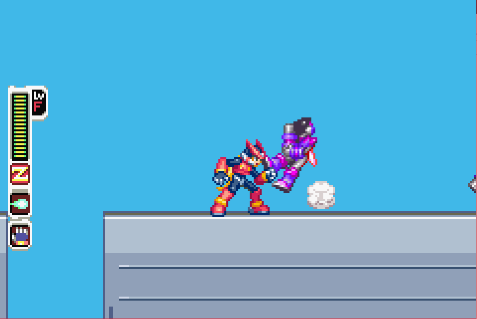
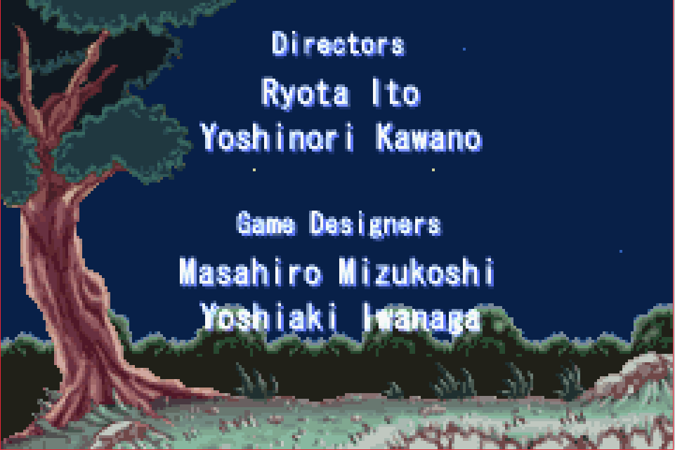
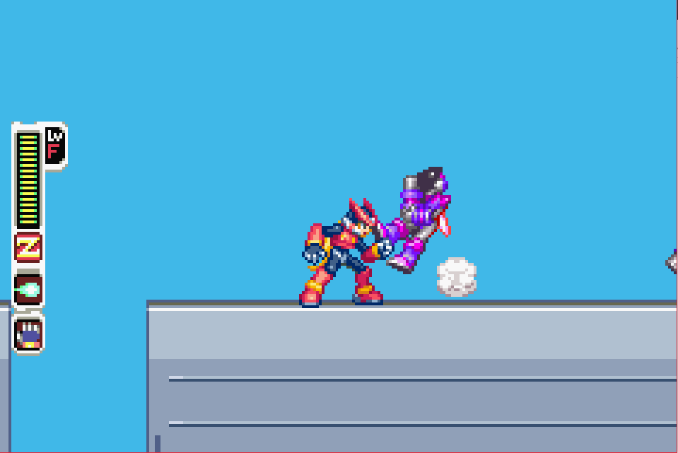
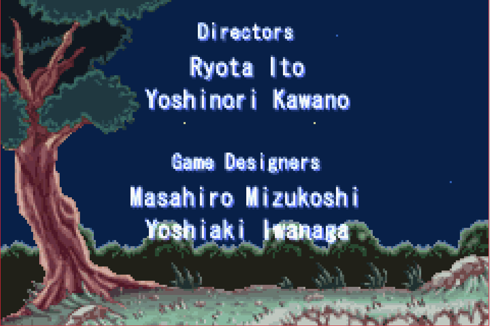

Mega Man Zero 4

Complete on 2017-11-17
3 / 5
Release Date: Oct 4, 2005
Meta Score: 77
Screenshots
 



Notes
The Mega Man series is a very long running Capcom series, appearing mostly on Nintendo consoles. The Mega Man Zero sub series follows the eponymous Zero, a humanoid robot with fabulous hair who fights for a human resistance against evil "maverick" robots. I believe this all fits in with the somewhat confusing overall plot of the Mega Man series. They are side scrolling action/platformers
Mega Man Zero 4 took a long time for me to complete, but for once it was not the game's fault. Rather I was quite busy changing jobs and didn't get around to play it for a few months. Although it's the fourth game in the (sub-)series, I'm happy to play these out of order as I don't think the story's very important.
Speaking of which, the story follows Zero as he defends Area Zero, a rejuvenated area in an otherwise shattered world, against attack by Dr. Weil and his 8 robot bosses. The humans living there are supremely ungrateful for his efforts until the final cutscene. Mostly this is just another excuse to fight another 8 robot masters lead by some kind of evil mad scientist, like all Mega Man plots.
The game play is typical of the mega man series, particularly the Mega Man X and later games. You can run, shoot your gun, and dash and wall jump around fluidly. There's a bit more emphasis on up-close fighting as 2 of Zero's main weapons are the Z-Saber energy sword and the Z-Claw which is used to grab enemies and take their weapons. I stuck mostly to the Z-Saber, preferring its high damage.
Most of the game, after the introduction level, is picking a stage from the 8 main stages and playing through to find and kill the boss at the end. Interestingly, you can change the weather. Each stage has a helpful and unhelpful weather state allowing you to tweak the difficulty. Also if you pick the unhelpful weather the state the boss will be slightly harder but will drop their "EX-Ability" on death, which are various small additions to your move set. Some of these are elementally charged and will then do extra damage to some other bosses.
As the game goes on you get stronger in various ways. You collect E-Crystals to feed to a "cyber elf", which unlocks various passive buffs. You can also find parts and craft items which buff you in various ways. This system is very opaque as there are a large number of different parts (most enemies drop a unique part), and you combine 3-4 of them to craft an item. Most combinations however produce junk and there doesn't seem to be much in the way of hints to how to craft good items. In particular, the double jump and sub tanks are massively helpful but I only even knew they existed after looking it up online. Getting the most out of these systems seems to require annoying grinding.
My main gripe with this game is it's hanging on to some old fashioned game mechanics, much to its detriment. The biggest one is that you have lives. You start with only 2 and extras are rare. Getting a game over forces you to restart the current stage at the beginning. This is very annoying as the bosses are tough and require practice to learn their move sets. But every third try you have to start all over again. This makes a fun challenge into a stupid grind. All this is exacerbated by the fact that environmental hazards like spikes and bottomless pits are instant death. This all makes me think they are trying to pad the game by making it obnoxiously frustrating rather than a fun challenge.
The last stage kicks it up another notch too, as you have to re-fight all the stage bosses back to back, followed by a two-stage final boss. I think this is traditional in Mega Man games, but that doesn't make it good.
It's a shame as the game is otherwise very good, with fun, fluid gameplay and challenging bosses. So I (ab)used save states to effectively give myself infinite lives. This made the game playable for me.